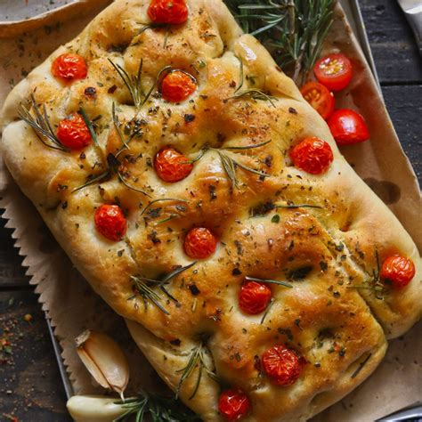
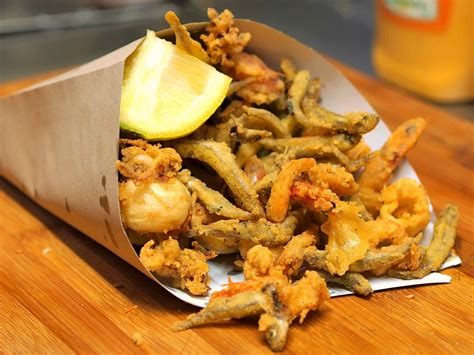
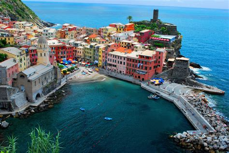
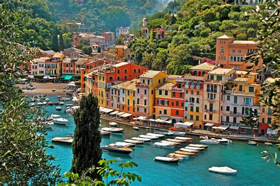

Liguria
Overview
Liguria is a coastal region in northwestern Italy, known for its picturesque beaches, rugged cliffs, and colorful seaside villages. It stretches along the Italian Riviera and is famous for its charming towns such as Genoa (the capital), Portofino, and Cinque Terre. Liguria offers a unique blend of mountain and sea landscapes, making it a popular destination for outdoor enthusiasts and travelers seeking stunning views, delicious food, and rich cultural history.
Quick Facts
- Capital: Genoa
- Regional Language/Dialect: Italian
- Population: ~1.5 million
- Famous For: Beautiful coastline, pesto, Cinque Terre
- Fun Fact: Liguria is home to the world-famous pesto sauce!
Popular Dishes
Pesto alla Genovese

Focaccia

Frittura di Pesce

Farinate

Famous Landmarks
Cinque Terre

Genoa

Portofino

Abbey of San Fruttuoso

Gulf of Tigullio

Best Time to Visit
The best time to visit Liguria is during the spring (April to June) and early autumn (September and October). These months offer mild weather, perfect for hiking, exploring coastal villages, and enjoying the beaches.
Regional Symbols
- Flag:
- Coat of arms: